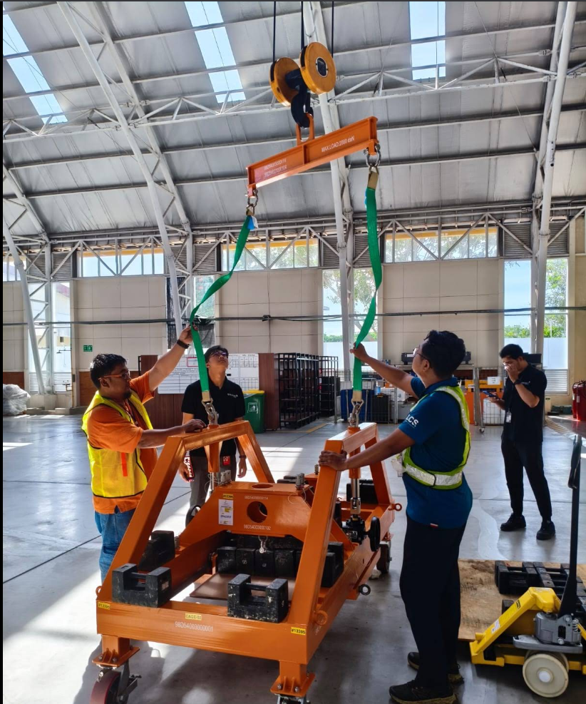
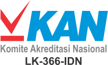
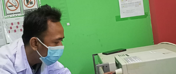
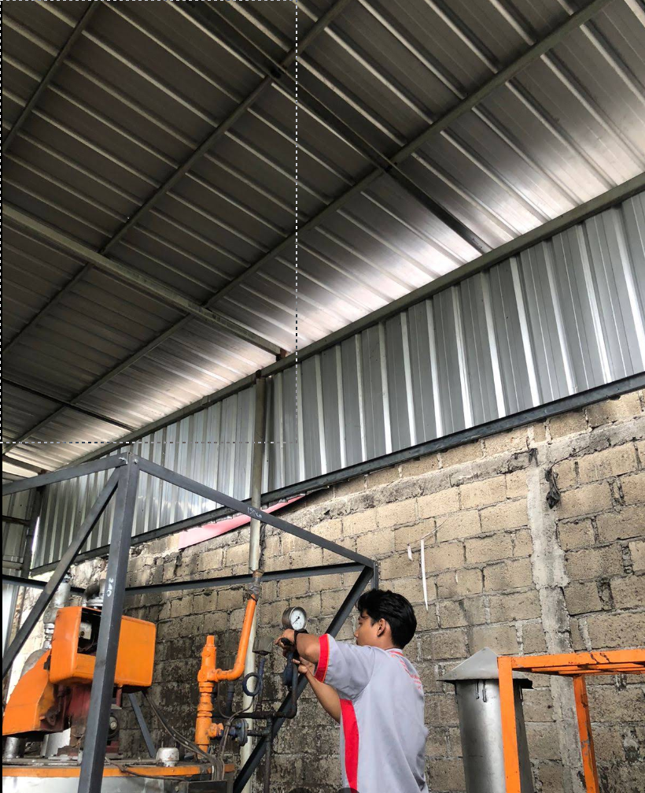
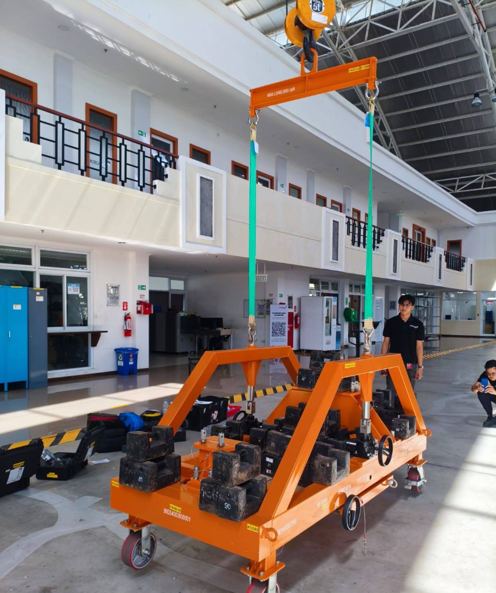
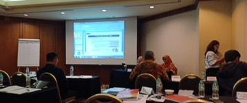

Layanan Kalibrasi & Pengujian Terakreditasi KAN
PT Kalibrasi Pengujian Indonesia (Kalpindo) memastikan kepastian nilai ukur peralatan industri Anda melalui layanan kalibrasi suhu, tekanan, massa, dimensi, dan kelistrikan.
Sertifikasi ISO/IEC 17025:2017
Seluruh hasil ukur kami valid, tertelusur, dan terakreditasi oleh KAN.

PT Kalibrasi Pengujian Indonesia (Kalpindo)
Kalpindo adalah laboratorium independen yang bergerak di bidang jasa kalibrasi, pengujian, pelatihan, dan layanan teknis industri. Kami hadir dengan visi untuk menjadi perusahaan yang profesional, kompeten, handal, dan terpercaya di Indonesia.
Kami membawa misi menyelenggarakan pemeriksaan teknis dan penilaian secara independen sesuai dengan standar yang berlaku. Fasilitas laboratorium kami di Cileungsi, Bogor, siap memastikan ketertelusuran dan kepastian mutu untuk setiap rantai produksi industri Anda.

Dipercaya oleh Lebih dari 500+ Pelanggan
Menjadi mitra andalan untuk berbagai industri multinasional dan BUMN di Indonesia.
Patra Niaga
Copper Gold
*Dan ratusan pelanggan industri lainnya di seluruh Indonesia.
Ruang Lingkup Kalibrasi
Kami melayani kalibrasi berbagai instrumen ukur industri dengan rentang ukur dan akurasi yang diakui secara internasional.
Suhu & Kelembapan
- Thermocouple / Sensor Suhu
- Thermometer Digital & Gelas
- Oven, Furnace & Incubator
- Chiller & Freezer
- Thermo-hygrometer
Massa & Timbangan
- Digital Balance (Analitik)
- Timbangan Duduk / Lantai
- Anak Timbangan (Standar)
- Crane Scale
- Timbangan Pegas
Tekanan (Pressure)
- Pressure Gauge
- Vacuum Gauge
- Safety / Relief Valve
- Pressure Transmitter
- Manometer
Dimensi & Panjang
- Micrometer (Luar/Dalam)
- Caliper (Jangka Sorong)
- Dial Indicator / Thickness
- Gauge Block
- Meteran Roll / Baja
Kelistrikan & Waktu
- Multimeter / Clamp Meter
- Tacho Meter (Putaran)
- Timer / Stopwatch
- Insulation Tester
- Earth Tester
Gaya & Torsi
- Torque Wrench
- Push Pull / Force Gauge
- Torque Screwdriver
- Testing Machine (UTM)
- Load Cell / Proving Ring
Tidak menemukan instrumen yang Anda cari? Hubungi kami untuk konsultasi ruang lingkup.
Konsultasi via WhatsAppLayanan Komprehensif Lainnya
Selain kalibrasi, kami melayani kebutuhan teknis laboratorium industri secara menyeluruh.
Pengujian Material
Layanan pengujian destruktif dan non-destruktif untuk memastikan spesifikasi komponen.
Service & Electrical
Perbaikan instrumen rusak dan pemeliharaan sistem kelistrikan di lapangan.
In-House Training
Pelatihan teknis oleh asesor profesional untuk meningkatkan kompetensi personel.
Alur Proses Kalibrasi
Proses transparan dan terstandarisasi dari awal hingga sertifikat terbit.
Pengiriman Alat
Kirimkan instrumen ke laboratorium kami atau jadwalkan layanan On-Site.
Verifikasi & Kondisi
Pengecekan kondisi fisik, identitas alat, dan penerbitan surat perintah kerja.
Proses Kalibrasi
Pengukuran dilakukan oleh teknisi bersertifikat menggunakan standar tertelusur.
Laporan & Sertifikat
Penerbitan Sertifikat Kalibrasi resmi yang sah dan diakui KAN secara internasional.
Pengembalian Alat
Alat dikembalikan bersama sertifikat dan laporan lengkap siap untuk audit.
Galeri Aktivitas
Dokumentasi kegiatan kalibrasi kami, baik yang dilakukan di dalam fasilitas laboratorium (In-Lab) maupun langsung di lokasi pabrik Anda (On-Site).

.jpg)

.jpg)
.jpg)
Artikel & Edukasi
Pahami pentingnya kalibrasi untuk industri Anda.

Mengapa Kalibrasi Rutin Wajib Dilakukan di Industri?
Alat ukur yang tidak dikalibrasi dapat menghasilkan data yang menyesatkan, berdampak pada kualitas produk dan keselamatan kerja.
Baca Selengkapnya.png)
Apa itu ISO/IEC 17025 dan Mengapa Penting bagi Klien?
Sertifikat yang diterbitkan oleh laboratorium terakreditasi ISO 17025 memiliki nilai hukum yang diakui dan dapat diverifikasi secara global.
Baca Selengkapnya.jpg)
Kapan Harus Pilih Kalibrasi In-Lab vs. On-Site?
Beberapa jenis alat tidak bisa dipindahkan. Ketahui kondisi mana yang mengharuskan Anda memilih layanan kalibrasi langsung di lokasi.
Baca Selengkapnya.jpg)
Pentingnya Kalibrasi Alat Ukur Dimensi pada CNC
Kesalahan mikro pada alat ukur dimensi dapat menyebabkan gagal produk yang merugikan. Pelajari standar toleransi untuk komponen mekanis.
Baca Selengkapnya
Mencegah Kebocoran Pipa dengan Kalibrasi Pressure Gauge
Pressure gauge yang tidak akurat adalah bom waktu di pabrik kimia. Kalibrasi rutin menekan risiko kegagalan instrumen fatal hingga 95%.
Baca Selengkapnya.jpg)
Cara Mengatur Jadwal Kalibrasi Alat untuk Pabrik Skala Besar
Strategi manajemen kalibrasi agar operasional pabrik tidak terganggu. Buat matriks penjadwalan yang efisien bersama tim QC Anda.
Baca SelengkapnyaPertanyaan yang Sering Diajukan
Temukan jawaban atas pertanyaan umum seputar layanan kalibrasi Kalpindo.